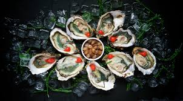

The Cuisine of the Mbes Pe'matse'juk
Food around Mbes Pe'matse'juk Kwetak largely consists of:
Seriously, what do you think they ate?
Back when the Mbes Pe'matse'juk traded with the Potawatomi, berries, corn, and carrots were a beloved part of the diet. However, though some were willing to try it, the Mbes Pe'matse'juk never warmed up to bird meat or game. They were quite fond of Maple Syrup, but that was a difficult item to handle underwater, and was often consider more work than it was worth.
